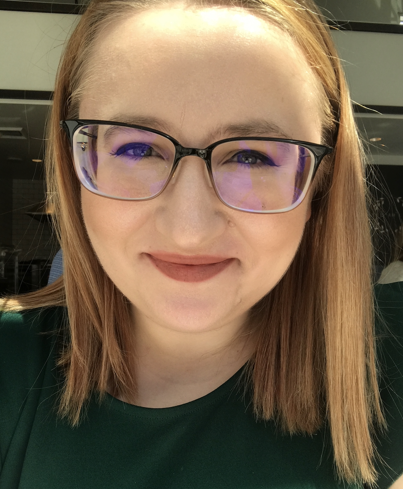

Who Am I?
Answering this question was incredibly difficult for me, not because I do not know who I am but because I think of myself as being incredibly boring. Most “about” sections in books, websites, social media, blogs whatever it may have all been incredibly interesting or inspirational. I however am not interesting or inspirational, I am just a regular 24 year old trying to find her way through life.
My name is Elsa and I am an Albanian American living in Seattle and working for one of the largest corporations in the world. I moved to Florida from Albania with my parents and brother in 2002 after having been dragged to the airport kicking and screaming (safe to say I did not want to move here). Being raised in Florida I assimilated to the American society by learning English to the point that most thought I was just another “white girl” from Florida and pretending I understood the cultural nuances that came along with having been raised in the states in the ’90s, which obviously I had not.
While I was a young child I experienced my parents working multiple jobs to make ends meet, something that I thought was a very immigrant thing to do but have since learned instead that it is a very working class thing to do. My parents left behind their friends, family and lives they had worked so hard for to immigrate to the states simply so that their children would have more opportunities in life, especially in regards to their education. It is because of the sacrifices that my parents made (of which they would remind me when I was being a brat) that instilled in me my work ethic and the mentality of never giving up. This is what established the importance that I placed on my education and how doing well in school became my sole focus in life when I was younger.
My work ethic and dedication to my education translated into me being a part of the International Baccalaureate Program while in high school, which gave me the ability to work under a tight deadline in sleep deprived state and made college seem like a breeze in comparison. After high school I went to Florida State University and graduated with a degree in Finance and Marketing. While trying to determine what my post grad plans would include, I looked for the perfect opportunity that would move my career in the direction I wanted, to be a boss lady. When I was given the opportunity to move to the west coast I leaped at it and now here I am, living in Seattle writing about my experiences.
My experiences really aren’t anything extraordinary which is why I stated that I am boring and ordinary. However like most ordinary people I am trying to find my way in the world, figure out who I am and what my path is. My journey to get to where I am, though not complete has been difficult however these are difficulties I believe we all face but never talk about it. So let’s talk about it.